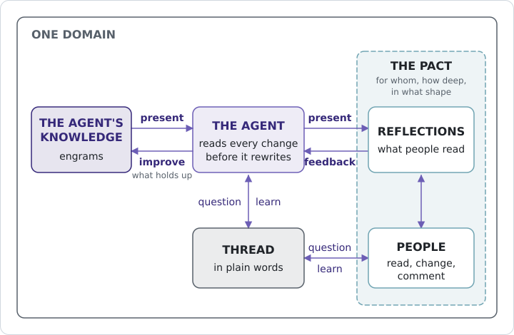
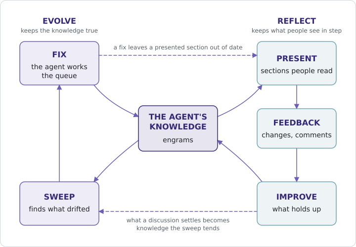

12 Reflection
Reflection is planned for Crystalline 0.26 and 0.27: the files, the tools and the agent’s side first, the screens in Fluid one release later. What you read here comes from the plans, and details can still move before the release.
Reflection is the place where people and the agent meet on a domain, and this chapter walks you through it as the plans have it. The agent writes its engrams for itself, organized so it can store, find and pick up what it learned, and nothing in them is phrased for you. Since people need what’s in there too, the agent presents it in documents for people, at their level and in a shape they can use, and what people change or say about those documents flows back into its engrams.
12.1 Why not read the engrams
An expert who knows a topic doesn’t hand you their notebook. They explain it at your level, leave out what you don’t need and pick the order that makes sense to you. Engrams are the notebook: dense, cross-linked, full of observations written for the next session’s search, and a person reading them is reading somebody else’s shorthand.
You can still open the engrams in Fluid, as a look into the agent’s mind (a bit like a session on the couch, or a debugger): you go there once in a while to inspect what it learned and fix it. With Reflection, Fluid gets a second mode beside the engrams, and people spend their day in that one.
12.2 Asking a colleague to present
Think of the colleague who knows a topic best: you ask them to give the team a presentation on it. Once it’s up on the screen the room works with it, and the feedback improves it for everyone, presenter included: somebody spots a gap, somebody else knew a detail the presenter didn’t, two people find out they meant different things by one word.
Reflection does that for a domain: switch it on and the agent presents what it knows as reflections, documents in a folder tree, as many and as deep as the domain agreed. Each one is made of sections (a heading and its text), and every section records which engrams it was built from, so when one of them changes the agent knows which sections to look at again. Crystalline doesn’t write the reflections itself; it hands the agent a queue of work and the agent does the writing.
12.3 The pact
Before anybody presents, the room agrees on how. Every domain with a Reflection has one pact, a file called PACT.md: who the reflections are for, how much detail they carry and how the tree is structured. The MANIFEST tells the agent what the domain holds, the pact tells everyone how to talk about it. The people who curate the domain edit the pact: everyone from engram editor up, its owner, a private domain’s managers and the instance’s admins. Everybody else who works on the reflections reads it. A change to the pact lands in the agent’s queue like any other work, and the agent reshapes the reflections to match.
Most of the arguing is about the level of detail. The Hitchhiker’s Guide had a pact too: Ford Prefect’s fifteen years of field research on Earth went into the entry as two words, Mostly harmless. That’s fine for a guide to the galaxy and wrong for a book club, so anyone who works on the reflections can argue with it in a comment, and a curator changes it when the argument wins.
12.4 Present, test, improve
The agent presents, and people read what it wrote, change it and comment on a passage. A person’s change shows up at once as ordinary text (no badge, no approval step). In the background Crystalline notes what changed since the agent last presented that section, and the next time the agent works the queue it reads a person’s change to a section before it rewrites that section. If a change looks wrong or doesn’t fit what it knows, the agent opens a thread on the passage and asks. It does the same with two engrams that disagree (Chapter 11) and asks you; here the doubt is about a person’s change, and that person is right there on the page.
Either the agent knew something the person didn’t, or the person turns out to be right and the agent puts the correction into its engrams. A change ends one of three ways: the agent takes it in and presents the section again, it stays as the person’s text or it gets talked through in the thread. The agent writes plain words there and never links an engram, since many of the people in a thread can’t open one.
When the agent’s own knowledge moves (a correction, a retirement, something new from a session), the sections built from it are out of date and the agent brings the change into the reflections. Something new that no section covers yet gets a new section or a reflection of its own.

Figure 12.1 shows the loop. Nobody has to remember to run it: an agent working in the domain gets reminded when the queue has open items, like it does for the sweep, and a team can schedule a nightly agent run on its server to work the queue.
12.5 The club
Dallas runs the book club, and its engrams live in club, shared through the club’s repository and served by the club’s server, which you look after as its admin. Members keep asking Dallas the same things (which Star Trek volume is next, when the club gets to Dune), so he asks you to switch Reflection on, with a pact he has in mind:
You: Switch on Reflection for club. Dallas wants the pact like
this: for members, no spoilers past the first chapter,
one page per series.
Agent: Switched on at the club's server, so club's Reflection
lives there, backed up to its own branch of the club's
repository. PACT.md says: for club members, spoiler-free
past the first chapter, one reflection per series. Shall I
present what I know?
You: Go ahead.
Agent: Six series pages: Hitchhiker's, Dune, Dungeon Crawler Carl
and the Star Trek series the club reads (The Next
Generation, Deep Space Nine, Destiny). Each says what the
club read, what's next and what members thought, without
the endings.Lambert follows the club on her phone and has no wish to read engrams, so on her account you set the knowledge level to none and the Reflection level to contributor. She can edit every page of the club’s Reflection.
She’s on the bus home with the Dune page open on her phone (the club’s Fluid) when she changes March to May in the line about when the club reads Dune.
That night the club’s scheduled agent run works the queue and reads her change first. It contradicts the agent’s engrams: the club picked March in January, after checking that the paperback was out by then. So it opens a thread on the passage:
Thread on "the club reads Dune in May"
Agent: This said March. The club picked March in January because
the paperback was out by then. What moved it?
Lambert: The reprint slipped. Capsule Corp Books says April now,
and nobody wants the hardback. I wasn't there in January,
so I didn't know March was about the paperback.
Agent: Then May holds. I've changed what I know about the club's
list and the reprint, and presented the section again.
Resolved: taken in, Dune moves to May because the
paperback reprint slipped to April.With the reprint date in the engrams and Dune out of March, the club needs another pick, and at the next meeting it chooses the second volume of the Destiny trilogy, which Kane’s agent captures in club. On a later run the agent sees that the next-up section of the Destiny page, built from the club’s list, is out of date and puts the new pick in without anybody touching the page.
12.6 Who sees what
With Reflection, access gets two axes, and you set them separately. One is the level on the engrams that Chapter 14 and Chapter 17 describe: viewer or editor (plus manager on a private domain and admin on the instance), and one new value, none, for somebody who sees no engrams at all. The other is the Reflection level: a reader reads the reflections and comments (opening, answering, resolving and reopening threads); a contributor also edits their text and creates, moves and deletes reflections; a curator also writes sections from the engrams and settles what people changed. Nobody is made a curator by hand: everyone from engram editor up is one, and their agents curate with their rights. A viewer of the engrams is a reader by default, and a Reflection level set on top only ever raises that (to contributor, say), so nobody who can read the engrams is kept out of their Reflection.
On a shared domain both levels sit on the person’s account, set by an admin for every shared domain on the instance, and on a private domain they sit side by side on the membership. Anonymous web visitors get in only where the instance lets anonymous requests in, and there they read the reflections of the domains an anonymous visitor can read, the way they read those domains’ engrams, without ever commenting. On your own machine without accounts none of this applies and everything is allowed.
In Fluid the Engrams mode appears from knowledge viewer up and the Reflection mode from reader up, so a person with knowledge none, like Lambert, works on the reflections and never sees an engram.
Since a presentation needs one room, a team domain’s Reflection lives on one home instance, the team server: everyone works on it there and the server backs it up to its own branch of the domain’s repository. Laptops keep no copy of it, and when you share changes, only engrams go to the repository, never reflections. A domain that only lives on your machine keeps its Reflection there too, as ordinary files.
A member’s agent reaches the club’s Reflection through the server connection Section 14.9 describes, the one that lets a laptop’s Crystalline offer a server’s domains beside its own.
12.7 Two lifecycles
A domain with Reflection runs two lifecycles around the same engrams (Figure 12.2). On the left is evolve, the sweep from Chapter 10, with which the agent keeps its own knowledge true. Reflect keeps what people see in step with the engrams and brings back what people know. The two cross twice. A fix from the sweep (a retirement, a corrected date) leaves the sections built from the old engram out of date, so they land in the reflect queue. And what a thread settles lands in the engrams, where the sweep tends it from then on like everything else.

You switch Reflection on with reflection: on in the MANIFEST (it’s off until you do). On a domain with a GitHub origin the same change writes reflection_home too, and its value is this instance’s service.public_url. Without a public URL the switch refuses and tells you to switch Reflection on at the team server. On any other instance the Reflection tools refuse and name where the domain’s Reflection lives. Without a GitHub origin there’s no reflection_home, because the Reflection simply lives where the domain does. The files all sit under reflections/: PACT.md at its root, the reflections as markdown files in whatever folders the pact describes (each ## heading a section), the threads of a reflection in a .threads.md file beside it and a hidden baseline of what was last presented under reflections/.reflected/. Moving a reflection takes its threads and baseline along and rewrites relative links to it. While the switch is on, the folder stays out of engram sync, the engram index, evolve, default search_engrams and sharing; the engram write tools refuse any path under it (write_engram, edit_engram, move_engram, delete_engram), and reflections are searched as text in an index of their own. Switching on refuses while engrams live under reflections/ and names them, so you move them first.
The agent gets four tools, the same list for every client (a read-only instance hides reflect, write_reflection and discuss), and each of them refuses on a domain with the switch off. reflect hands over the queue ranked, recomputes it on each call and puts the oldest item first, with its age. In the queue, feedback means a person changed a section since the agent last presented it, and the item carries the difference, the section’s source engrams and who changed it. update means the knowledge behind a section moved: a source engram changed or retired, a relevant engram has no section yet, a reflection strayed from the pact or a pact change isn’t applied yet. And review items are open threads waiting for the agent; within one section a feedback item always comes before an update item. read_reflection without a path lists the tree; give it a path and you get that reflection with its sources and open threads. write_reflection creates, changes, moves and deletes reflections and edits the pact (the pact only for curators, the domain’s owner, a private domain’s managers and the instance’s admins); a section written with its sources is presented from the engrams, and one written without is an ordinary edit. discuss opens a thread on a section or a quoted passage, answers, resolves with a short outcome and reopens; a resolved thread’s history is never rewritten. The session-start briefing names a domain’s Reflection when it has open items, and the Stop hook and the line after a write nudge the agent as they do for the sweep.
The Reflection level (set by an admin on the account, or on a private domain by its owner or a manager) is “as knowledge” (the default), reader or contributor, and it only ever raises access: the effective level is the higher of the default and the setting. Curator follows from knowledge editor, manager, owner or instance admin and is never set on its own. Without an explicit level, knowledge viewer gives reader and knowledge none gives none. A caller with knowledge none gets nothing from any engram tool over MCP or REST and finds its domains through the Reflection domain list. On an instance that lets anonymous requests in, an anonymous web visitor reads the reflections of the domains it may read, as it reads their engrams, but never comments; otherwise it gets no Reflection. An anonymous agent over HTTP on an instance with auth.mcp off is the open tier, and it curates the Reflection the way it may write engrams.
On the home instance a job commits the whole reflections/ folder to the branch crystalline/reflections of the domain’s GitHub origin with the instance’s own token; the engram branch never carries it, and a restore from that branch is a manual step. The nightly run is a documented setup, a headless agent (for example claude -p from cron) on the home instance working the reflect queue; the installer doesn’t set it up.
At the top of a domain in Fluid you flip between Engrams and Reflection. Reflection mode shows the tree of reflections and each reflection with live co-editing, comments anchored on selected text and a jump from a section to its source engrams, hidden from people with knowledge none; curators, the domain’s owner and admins edit the pact like any reflection. The users screen and the members card set both levels. A review screen per domain lists the open threads first, split into waiting for people and waiting for the agent, oldest first, and below them the reflect queue, to look at the way Maintenance shows the sweep.
Engrams are the agent’s own knowledge, and opening them in Fluid is the exception, for inspecting and correcting. Reflection is where people and agents meet on a domain: the agent presents what it knows as reflections, at the level the domain’s pact agrees on, and everyone puts them to the test. People change and comment, the agent reads a person’s change to a section before rewriting it and asks in a thread when something doesn’t fit, and either side learns: a change goes into the engrams, stays as the person’s text or is talked through. Access has two axes, the engrams and the Reflection, so a contributor with knowledge none works on reflections without seeing an engram, and a team domain’s Reflection lives on its team server. Evolve keeps the knowledge true, reflect keeps what people see in step with it and each feeds the other.